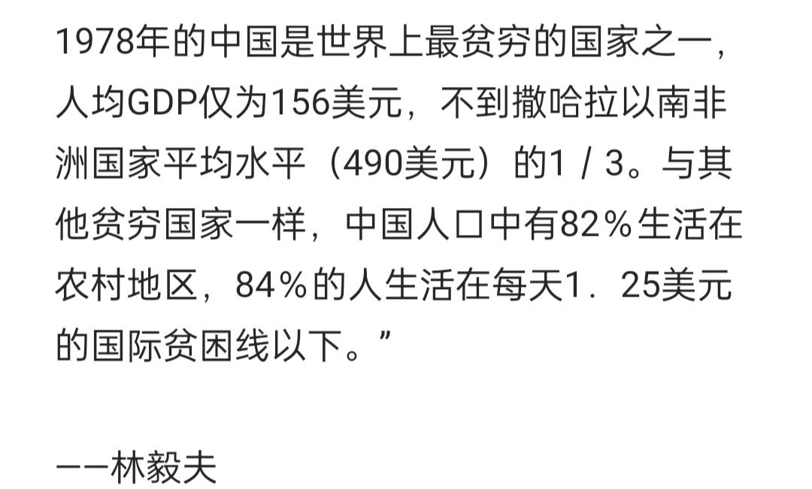

RT @MisakaNo8964: 世界上当然有劣质民主和劣质宪政，最成功的天花板民主国家是北欧，但最成功的康米政权的水平，也只能和印度这种劣质民主为伍，你的天花板只配和人家地板比烂，高下立判
且恰恰就是毛时代结束时中国经济水平远逊于印度与黑非洲，水平跟红色高棉堪称地狱双子星…

且恰恰就是毛时代结束时中国经济水平远逊于印度与黑非洲，水平跟红色高棉堪称地狱双子星…

世界上当然有劣质民主和劣质宪政，最成功的天花板民主国家是北欧，但最成功的康米政权的水平，也只能和印度这种劣质民主为伍，你的天花板只配和人家地板比烂，高下立判
且恰恰就是毛时代结束时中国经济水平远逊于印度与黑非洲，水平跟红色高棉堪称地狱双子星，这俩甚至拉低了康米国家的地板…… https://t.co/xClGyJzfF6 https://t.co/E5BkkmbVrb
且恰恰就是毛时代结束时中国经济水平远逊于印度与黑非洲，水平跟红色高棉堪称地狱双子星，这俩甚至拉低了康米国家的地板…… https://t.co/xClGyJzfF6 https://t.co/E5BkkmbVrb